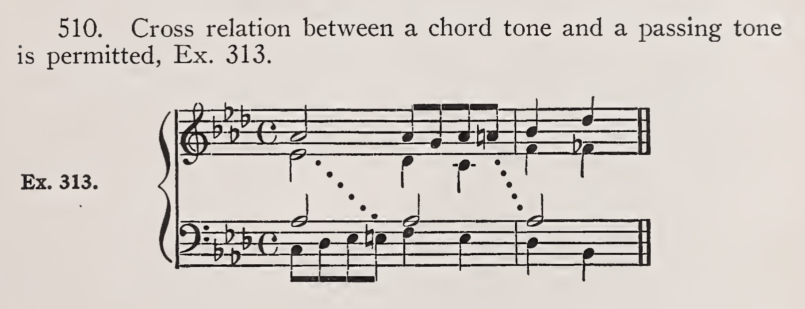

那么，从这里开始我们将进入和声学中最令人望而生畏的部分——“禁则（禁忌 / Prohibitions）”的世界。首先，我们先从相对次要、容易理解的禁则讲起。
 1. 不自然音程度数的禁则
1. 不自然音程度数的禁则
正统“和声学”自古以来就将人声合唱作为基本考量模型，因此存在一条告诫：“如果以怪异生僻的音程度数进行，不仅演唱困难而且听感不适，因而不可取”。具体而言，主要指以下几种音程的跳进：
七度跳进

据说七度跳进非常不易唱准。当然，只要你严格遵守“最短路径原则（声部级进与共同音保持）”，这种大跳绝对不会凭空发生。反之，如果你已经熟练掌握到能够自如驾驭高级手法的水平，完全可以相信自己的耳朵来决定是否使用它。
复音程跳进

超过一个八度的音程被称为“复音程（Compound Interval）”。单一声部在声部连接中跨越八度以上乱跳未免过于突兀离谱，不用多说大家平时也绝不会这么写。
增音程跳进

主要是在使用临时升降号时容易产生的“增二度”、“”、“增五度”等“增音程”跳进，在旋律线条上听起来生硬怪异，因此理论规定应当坚决避免。不过，如果是“增一度”，那本质上就是“平滑的级进”，自然是完全允许且鼓励的。值得注意的是，即便遵循基本原则，在小调等环境中“增二度”依然非常容易不知不觉产生（例如小调第vi音与第vii音之间），平时务必多加留心。
2. 对斜的禁则（交叉关系）
当使用同主音调借用或副属和弦等包含变音（临时变音记号）的和弦时，与该变音相关的声部运动变得极为重要。例如当I级和弦进行到副属和弦III7时，前一个和弦包含Sol，后一个和弦包含Sol♯，即分别包含本位音（未变音的原音）与变音。在这种情况下，这两个音必须由同一个声部来承担，以形成顺畅平滑的半音级进；如果将它们分散到不同声部去演奏，就构成了禁则。

左侧是完全合规的良好范例。右侧则是由于过度专注于设计I级的转位低音，导致Sol与Sol♯被拆散到了不同的声部中，这就违规了。和声学中将这种现象命名为对斜（Cross Relation / 交叉关系），原则上严格禁止。 需要说明的是，这专指同度上的半音差异，例如Fa-Fa♯或La-La♭（即增一度进行）；如果是像La♭到Sol这样不同音级之间的小二度级进，则属于另一回事。此外，如果是经过音或装饰音等和弦外音带来的变音，这类“对斜”禁则通常可以不予考虑。

摘自 Arthur Edward Heacox, 《Lessons in Harmony》顺便提一下，关于对斜禁则还存在不少特许豁免：例如发生在低音与内声部之间的对斜由于听觉上并不显眼，有些专著认为无伤大雅[1]；或者当后继和弦为减七和弦时可以通融；如果前和弦存在两个本位音，只要其中一个声部级进到变音、另一个声部便可自由移动等等，存在诸多根据具体语境放宽的例外。
较为基础浅显的禁则大致就是这些。无论怎么说，需要特别警惕的场合其实并不算多。从下一篇开始，我们将步入对那些真正声名显赫的核心和声禁则的深入剖析。